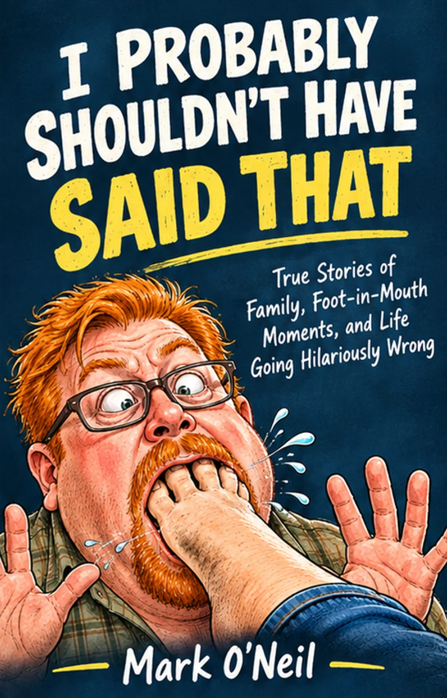
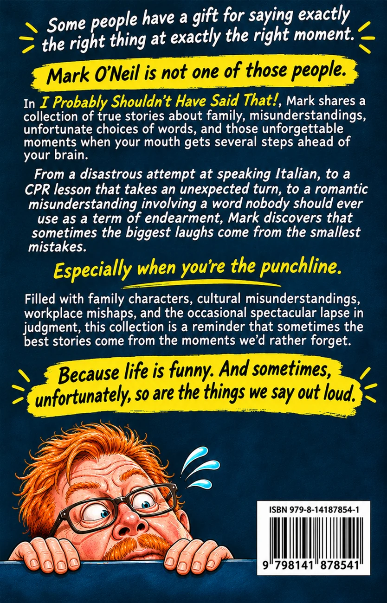

Hello! I'm Mark O'Neil.
First of all, thanks for stopping by!
I'm a Canadian author who recently took the plunge and published my very first book, I Probably Shouldn't Have Said That!
It's a collection of true stories about family, embarrassing moments, questionable decisions, and those unfortunate occasions when my mouth started working before my brain had finished its coffee.
Somehow, I've managed to turn a lifetime of saying the wrong thing at exactly the wrong time into an actual book. And even more surprisingly, a few people have already bought it!
Now comes the slightly terrifying part: finding out what readers actually think.
As a first-time author, I'm hoping to collect some honest reviews on Amazon. Reviews are incredibly helpful for new authors because they give other readers a better idea of what to expect and help books like mine get discovered.
So here's my offer.
I'd love to give you a completely free digital copy of my book in either EPUB or PDF format.
All I ask is that, if you have the time and inclination after reading it, you consider leaving an honest review on Amazon.
There's absolutely no obligation, and I'm not asking for five stars. I'm just hoping you'll enjoy a few laughs along the way.
Simply enter your name and email address below, and you'll be able to download your free copy immediately.
Thanks for supporting a first-time Canadian author. I really do appreciate it!
Mark O'Neil
Author of I Probably Shouldn't Have Said That!
Get your free review copy
Fill out the short form to access EPUB and PDF downloads immediately.
Your name, email, and optional profile will be saved privately to manage ARC requests. You won't be added to a marketing mailing list. A review is entirely optional.
A free review copy is offered without any requirement to post a review. If you choose to share your thoughts on Amazon, TikTok, Goodreads, or elsewhere, please give your genuine opinion and disclose that you received a free copy where required.